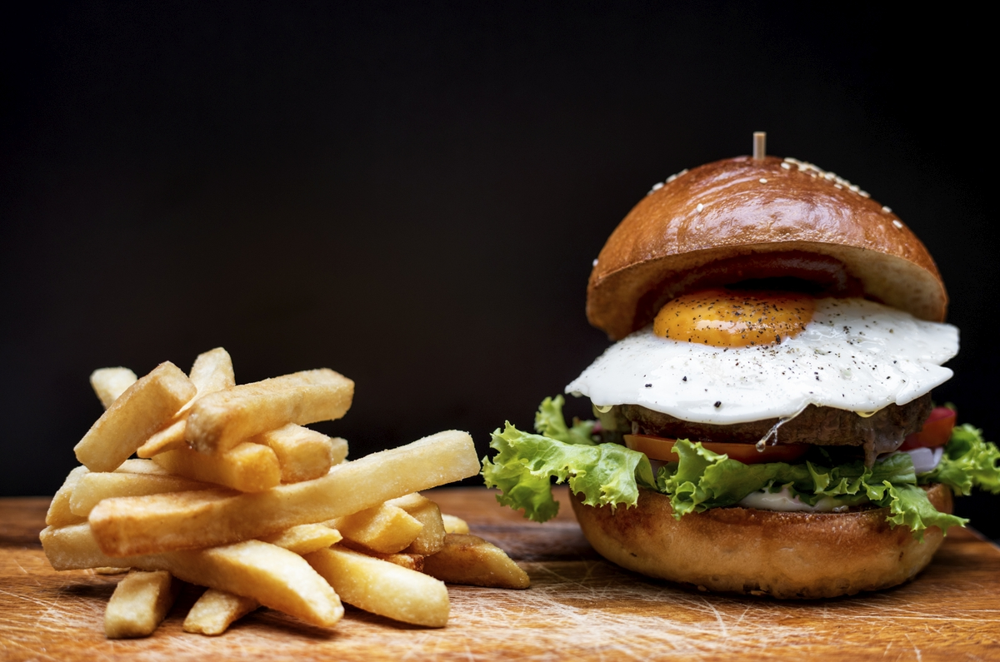

Hamburger typowe danie typu fast food, kanapka (sandwich) z kotletem z mięsa wołowego (patty). Porcja mięsa mielonego uformowana jest w płaski, okrągły placek, następnie usmażona lub upieczona bez panierki na ruszcie (grillu). Gotowy kotlet bywa zwykle umieszczany między dwoma kawałkami lekko przypieczonej, poprzecznie przeciętej bułki (co pozwala go jeść trzymając w dłoni, bez pomocy sztućców), oraz ugarnirowany dodatkami takimi jak sałata, pomidor, ketchup, majonez, ogórek konserwowy. W języku polskim słowo „hamburger” oznaczać może także sam, niepanierowany kotlet z mięsa mielonego